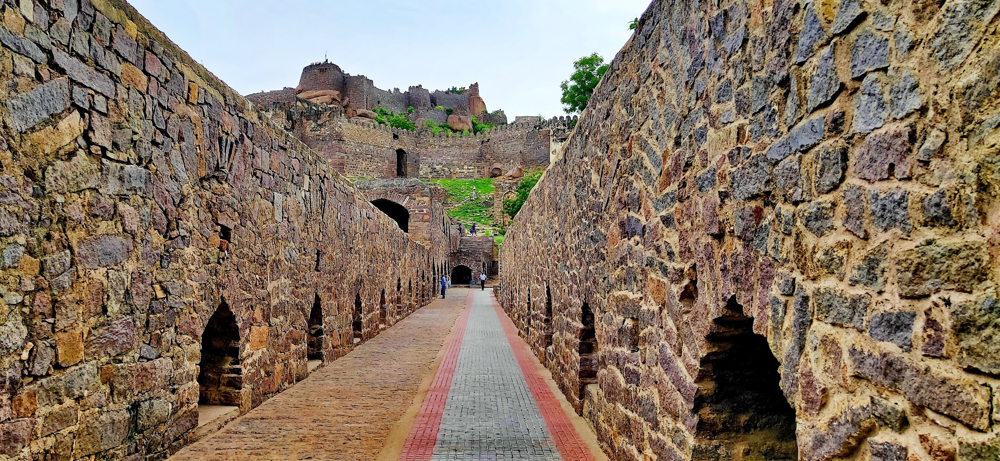

Welcome to my travel blog!.I am Subham Saha, a gradutate
student of Lovely Professional University this blog
Will showcase my travel adventure And photograph and insight from my
journey. Lets Eplore The journey Together
Recent Blogs
A Golden Glimpse of Spirituality: Exploring the Golden Temple
Discover the breathtaking beauty and profound spiritual significance
of the Golden Temple, a sacred Sikh shrine nestled in the heart of
Amritsar, India. Immerse yourself in the serene ambiance of the holy
pool, witness the mesmerizing rituals, and experience the warmth and
hospitality of the Sikh community.
Bow down before the holy book, the central scripture of Sikhism.
Witness the grand procession of the Guru Granth Sahib,
accompanied by hymns and prayers.
Immerse yourself in the divine music of Sikh hymns, sung by
devotional singers.
Find a quiet spot within the complex to meditate and connect
with your inner self.
Golconda Fort: A Majestic Glimpse into History
I recently had the privilege of exploring the majestic Golconda
Fort, a testament to the grandeur of the Qutb Shahi dynasty. As I
stepped through the imposing Fateh Darwaza, I was transported back
in time, immersing myself in the rich history and architectural
marvels of this iconic fortress.

Stepped through the imposing Fateh Darwaza, the main gateway to
the fort.
Experienced the incredible acoustics of the fort, clapping near
the dome entrance and hearing the echo travel a great distance.
Climbed to the hilltop pavilion for breathtaking views of
Hyderabad.
Explored local markets near the fort, purchasing unique
handicrafts and souvenirs.
About
Subham Saha, a graduate student of Lovely Professional University. i am also passionate about traveling and exploring different cultures and has takena keen interest in learning about historical events, myths, and legends.